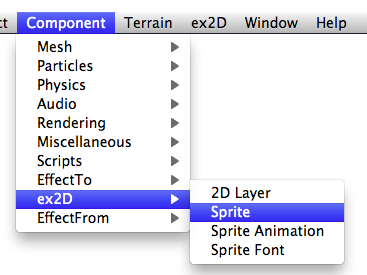
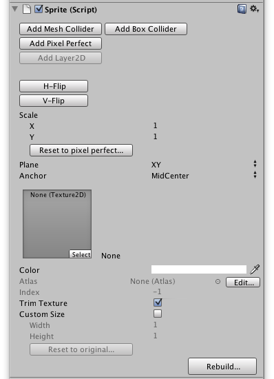

Create Sprite
To create a sprite, you first Create an empty GameObject in the scene in Unity. Select the GameObject and choose the Menu Item: Component > ex2D > Sprite

After you add the Sprite Component it will also add Mesh Renderer, Mesh Filter and Layer2D components. Your GameObject will look like this in Inspector:

Assign a texture
You can drag a texture from project to Texture Filed in Sprite Inspector.

If the texture is already in Atlas Assets ( More details, read Atlas Editor Guide ), it will automatically use the Atlas Texture in the Material, and find the index of the texture in this Atlas Asset.
If the texture is not build in Atlas, it will directly use it in your Material.